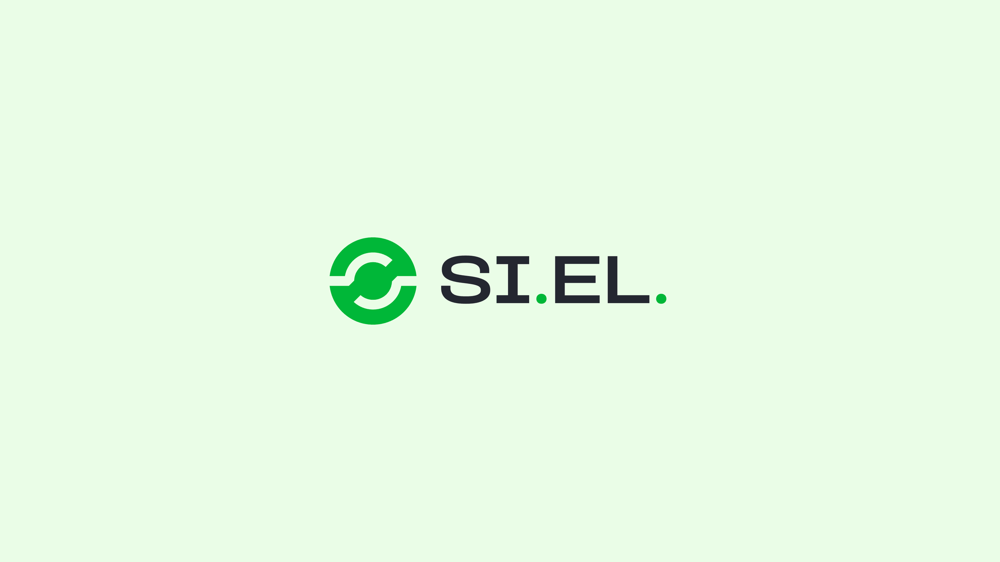
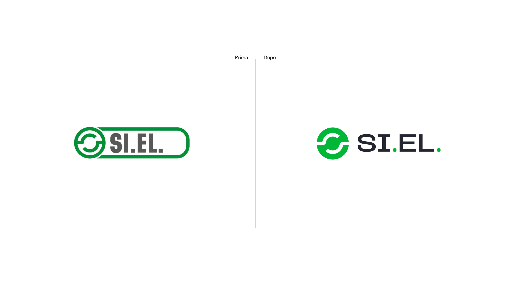
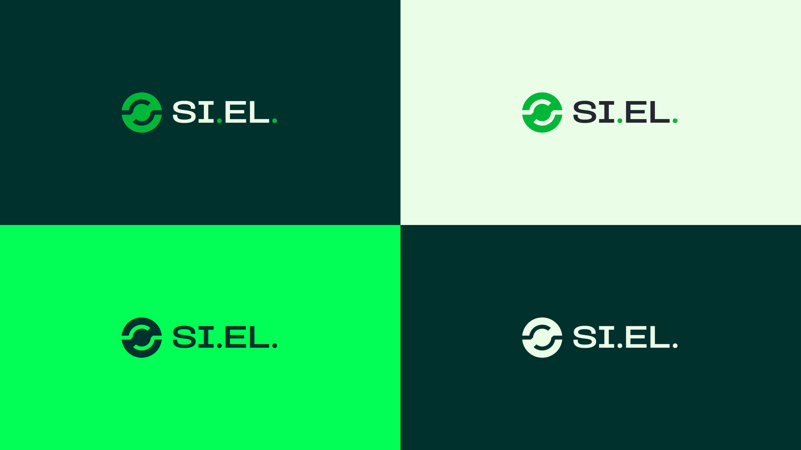
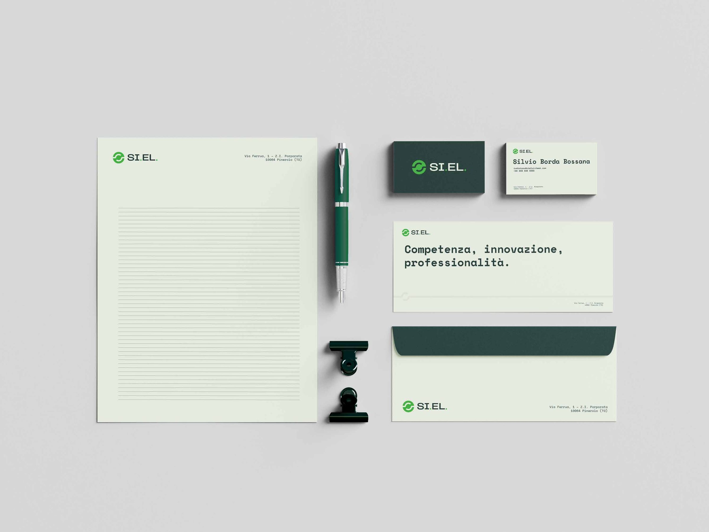
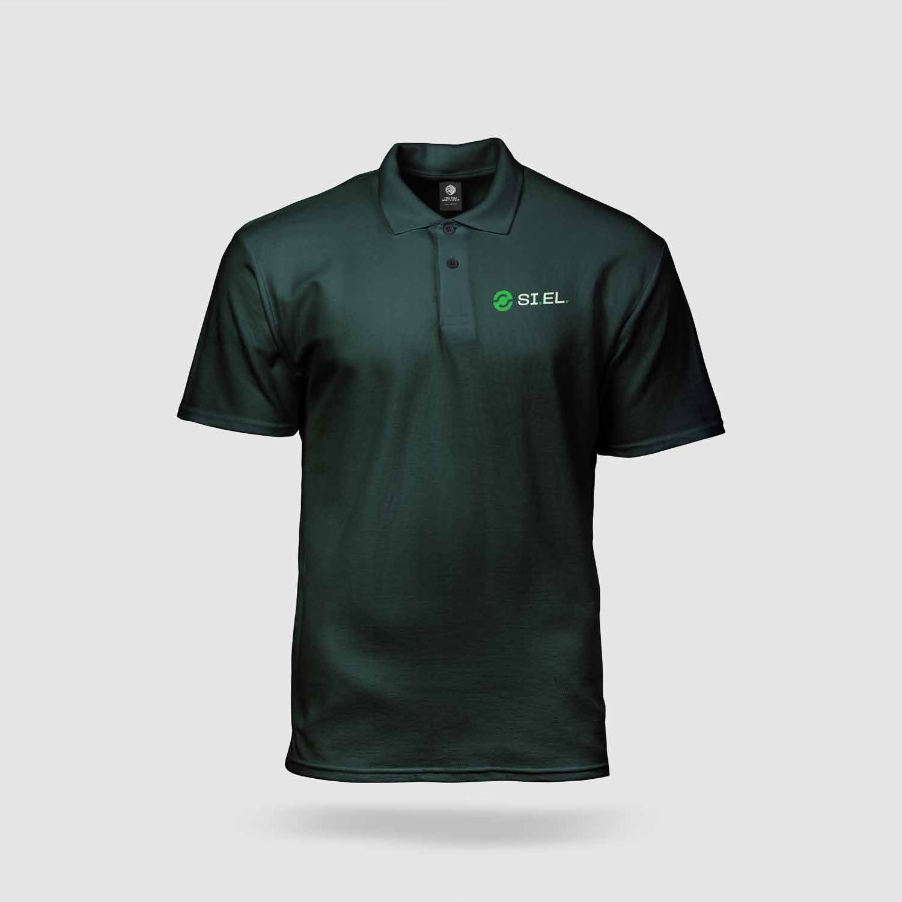

Lavori/Branding
SI.EL.
Rinnovare un logo in uso da quindici anni senza confondere clienti e fornitori.

Contesto
SI.EL. fa parte del gruppo Bonetto e lavora in Italia e all'estero come fornitore di impianti e servizi per i principali settori dell'industria e del terziario.
Brief
Il logo era lo stesso da quindici anni. La richiesta era di non stravolgerlo, per non creare confusione con clienti e fornitori.

Cosa è cambiato
Cosa hai tenuto del logo originale, cosa hai cambiato e perché: il simbolo, il carattere, i colori.


Applicazioni
Carta intestata, biglietti da visita, abbigliamento da lavoro e dispositivi di sicurezza.

